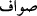
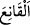
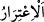
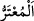
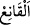
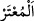

“Onlarda” büyük baş hayvanlarda “sizin için hayır”; dünyada bir çok fayda ve
âhirette de büyük ecir “vardır.”
Burada nefis hayvanını kalb Kâbesinin yanında kurban etmeye, onun dînin
nişanlarından ve talebde sıdk ehli olanların işâretlerinden olduğuna, hayrın sıdk bıçağı
ile onu kurban edip boğazlamakta bulunduğuna işâret vardır.
Onun zahiri (kurban olması) ölümdür, bâtını ise diriliktir
Zahiri noksan, gizlisi ise ebedîdir
“Şu halde onlar, ayakları üzerine dururken" __WORD__ __WORD__
Allah en büyüktür. Allah’tan başka ilah yoktur ve Allah en büyüktür. Allah’ım
sendendir ve sanadır” yâni bu kurban sendendir. Onu sana kurban eder/onun vesilesi ile
sana yaklaşırız.” diyerek “üzerlerine Allah’ın ismini anınız (ve kurban ediniz).”
“__WORD__ kelimesi develerin ayakta olmasından kinayedir. Çünkü develerin ayakta
durması ön ve arka ayaklarının sıralanmasını gerektirir. Yâni onlar ön ve arka
ayaklarını sıraya koymuş ve sol ön ayakları bağlanmış olarak ayakta oldukları halde
demektir. Âyet, devenin ayakta kurban edileceğine delâlet etmektedir. Nitekim Kâşifî
şöyle der: “__WORD__, ayakta duruyorken demektir. Deveyi ayakta iken kesmek sünnettir.”
Devenin ayakta kurban edilmesi sünnettir. Deve ayakta iken elinin biri bağlanıp
gerdanından boğazlanır ki buna nahr denilir. Çene altından kesilmesi de câizdir. Sığır ve
koyun, keçi ise yatırılıp üç ayağı bağlanarak kesilir. Bu hayvanların hepsinde kesilme
sırasında yukardaki şekilde Allah’ın ismi zikrolunur.
“Yan üstü yere düştüklerinde ise,” Bu ifâde ölümden kinâyedir. Kâşifî de şöyle der:
“Kesilen, kurban edilen hayvanlar yanları üzere yere düşüp canları çıkınca…”
“Artık (canı çıktığında) onlardan” yâni daha önce geçtiği üzere cinâyet, keffâret ve
adak kurbanı değilse “hem kendiniz yiyin,” Buradaki emir mubahlık bildirmek içindir.
“Hem de ihtiyacını gizleyen-gizlemeyen fakirlere yedirin.” Buradaki emir ise
vücûb/zorunluluk ifade eder.
“__WORD__ yanında olana kanâat eden ve istemeden verilen şeye razı olan demektir.
“__WORD__ istemeden ihtiyacını îmâ etmektir. Nitekim el-Kâmûs’ta “__WORD__ istemeden
iyilik ve ihsan îmâsında bulunan fakirdir.” der. Kâşifî ise şöyle der: “Zâdü’l-mesîr’de
nakledildiğine göre “__WORD__ Mekke fukarasıdır, “__WORD__ ise âfâkî (Mekke dışından gelen)
fakirdir.”
“İşte” “ayakları üzere dururken” sözünden anlaşılan bu eşsiz boyun
eğdirme/musahhar kılma gibi “bu hayvanları biz,” kurban edip Allah’a yaklaşmak ve
ihlâs sâhibi olmak sûretiyle size olan nimetlerimize “şükredesiniz diye” çok büyük ve
pek güçlü olmalarına rağmen “sizin istifadenize verdik.” Elde edeceğiniz faydalar için
emrinize râm kıldık. Onun için size karşı gelmezler de size itâat eder bir vaziyette onları